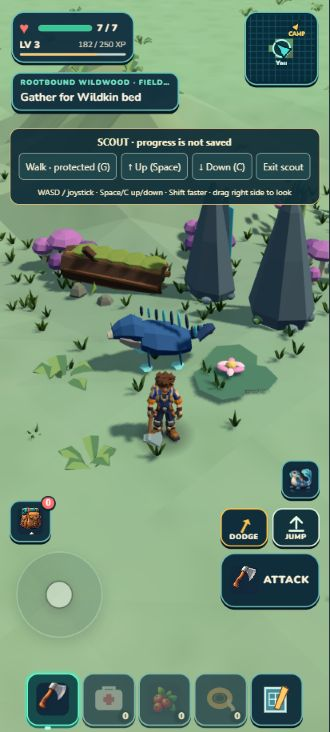
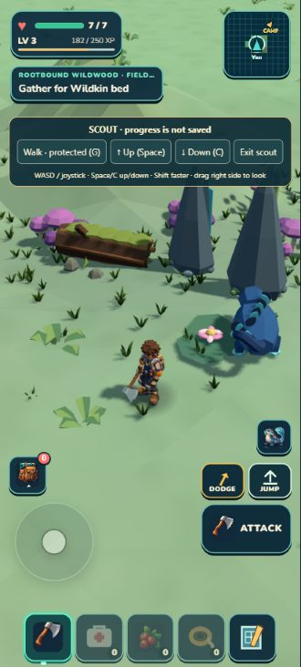
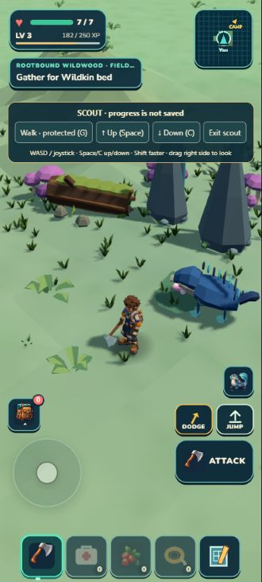
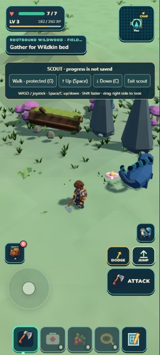

Actual native portrait comparison. This changed method combines a literal irregular height lattice with relief-correlated, per-face color. The original temporary preview is preserved below the now-integrated result. The moving companion is excluded from judgment.
The final shared terrain carries the same local faceted treatment through rendering and physics. The character crossed the changed patch and returned grounded. Real Rapier removal/re-entry and existing prop/resource support checks pass. All 1,434 tests, verification and ZIP pass; the packaged game matches the developer pose. This is a useful small surface improvement, not a finished habitat.


Independent source and visual review · Checkpoint evidence · Scoped physical support · Repeatable protected walking fixture
Movement was driven by timed keyboard events through the existing input path in protected Scout mode. It does not prove physical phone input, a whole outing, or persistent progress. The pre-existing unlocated MutationObserver error remains recorded; actual game rendering and physics continued.
Retained direction: independent review finds a modest coherent crinkled-floor gain. It remains quieter than the reference; shared support and scenery grounding are still required before integration.


The preview affects two cloned chunks. Their 2,500 total faces include 600 changed duplicated vertices representing 100 unique lattice positions. Render frames advance from 367 to 1,154. These are execution facts, not proof of visual improvement or collision support. A browser MutationObserver error of unknown origin is preserved in the log; it did not stop these renders.
Independent visual judgment · Plan · Preview receipt · Matching camera and live renderer · Restoration · Browser log · Earlier broad-plane comparison